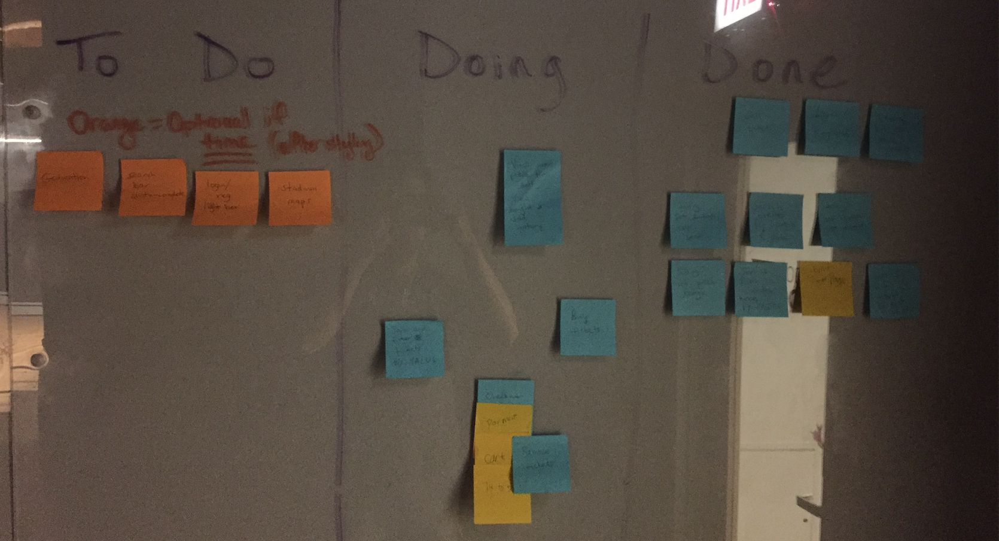
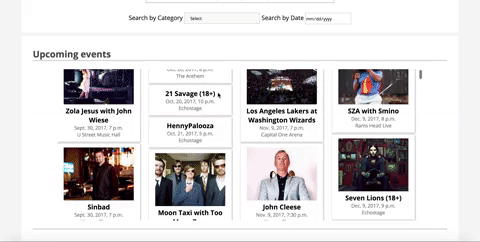
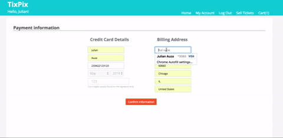

Full-Stack Development
Python/Django
My team was assigned the task of creating a web app similar to "Stubhub". We had many things to consider because of the database heavy nature of the web app. We first came up with features essential to the user experience which we then narrowed down to an MVP that became our main focus. We developed several user stories from the MVP list of features.
My User Stories
For this project I was responsible for the Login/Signup, Checkout, and Shopping Cart touch points. Before starting any of the coding I wrote out user journey maps that would allow me to identify any blockers which would give me the most efficient work-flow for my user stories.
Requirements:
Check-out
- Shopping Cart
- Tickets
- Buyers
- Sellers
- Ticket Page
- Ticket Change Status
Log in | Register
- Login/Reg form
- Database Creation
- User Check
- Password Confirmation
- User model
- Home Page
Shopping Cart
- Sellers
- Buyers
- Front End Cart
- Add/Remove Items
- Change Ticket Avaliablity
- Payment Confirmation
After listing requirements and identifying blockers I decided to started working on the Log In/Register user story since it was at the very beginning of the experience. This user story also did not have any current blockers that I would have needed my other team members to complete.
I started with building the user models and then validations. The validations, if not met, would display an error message on the client side informing the user of missing or required fields. In addition, I also built the models for the checkout process and also the logic behind adding and removing items to the cart.

Post-it Note Planning

My Team also utilized post-it notes to to plan out the most effective work flow. We were able to visualize our blockers and work on our sections of the project as the blockers were completed. We were also able to prioritize features as part of the MVP. Features essential to the MVP are on the blue post-its, the yellow post-its represent add-ons that would improve functionality of the MVP Features, and finally the orange post-its are the features not necessary to the MVP but are optional.
Styling | interactions
Browsing
Check-Out
Since design was not the main focus of the project. I took innitiative and added styling as I built out my user stories. I appreciate the aesthetic material design which I incorporated onto the pages I built. I ran through my color scheme with my group and they were very receptive of my ideas. I placed teal and variations of white as the main color scheme and added a vibrant orange as a call to action button. I made sure that the site was interactive and added hover states to clickable entities such as the tiles in the search results.